if(!require(tree)) install.packages("tree", dep=TRUE)
if(!require(ISLR2)) install.packages("ISLR2", dep=TRUE)Lab: Tree-based methods
Introduction
This lab presents some examples of applying shallow and ensemble-based trees.
It is adapted directly from lab 8 in “Introduction to Statistical Learning with R examples”, 2nd edition, and it can be run in parallel in Python or in R using the respective notebooks for each language downloadable from the book’s website.
Install / load required libraries
Fitting Classification Trees
The first example illustrates how to build classification and regression trees.
We first use classification trees to analyze the Carseats data set. In these data, Sales is a continuous variable, and so we begin by recoding it as a binary variable. We use the ifelse() function to create a variable, called High, which takes on a value of Yes if the Sales variable exceeds \(8\), and takes on a value of No otherwise.
attach(Carseats)
High <- factor(ifelse(Sales <= 8, "No", "Yes"))Finally, we use the data.frame() function to merge High with the rest of the Carseats data.
Carseats <- data.frame(Carseats, High)We now use the tree() function from the tree package to fit a classification tree in order to predict High using all variables but Sales. The syntax of the tree() function is quite similar to that of the lm() function.
tree.carseats <- tree(High ~ . - Sales, Carseats)The summary() function lists the variables that are used as internal nodes in the tree, the number of terminal nodes, and the (training) error rate.
summary(tree.carseats)
Classification tree:
tree(formula = High ~ . - Sales, data = Carseats)
Variables actually used in tree construction:
[1] "ShelveLoc" "Price" "Income" "CompPrice" "Population"
[6] "Advertising" "Age" "US"
Number of terminal nodes: 27
Residual mean deviance: 0.4575 = 170.7 / 373
Misclassification error rate: 0.09 = 36 / 400 We see that the training error rate is \(9\%\). For classification trees, the deviance reported in the output of summary() is given by [ -2 m k n{mk} {mk}, ] where \(n_{mk}\) is the number of observations in the \(m\)th terminal node that belong to the \(k\)th class. This is closely related to the entropy, defined in (8.7). A small deviance indicates a tree that provides a good fit to the (training) data. The residual mean deviance reported is simply the deviance divided by \(n-|{T}_0|\), which in this case is \(400-27=373\).
One of the most attractive properties of trees is that they can be graphically displayed. We use the plot() function to display the tree structure, and the text() function to display the node labels. The argument pretty = 0 instructs R to include the category names for any qualitative predictors, rather than simply displaying a letter for each category.
plot(tree.carseats)
text(tree.carseats, pretty = 1, cex=0.8)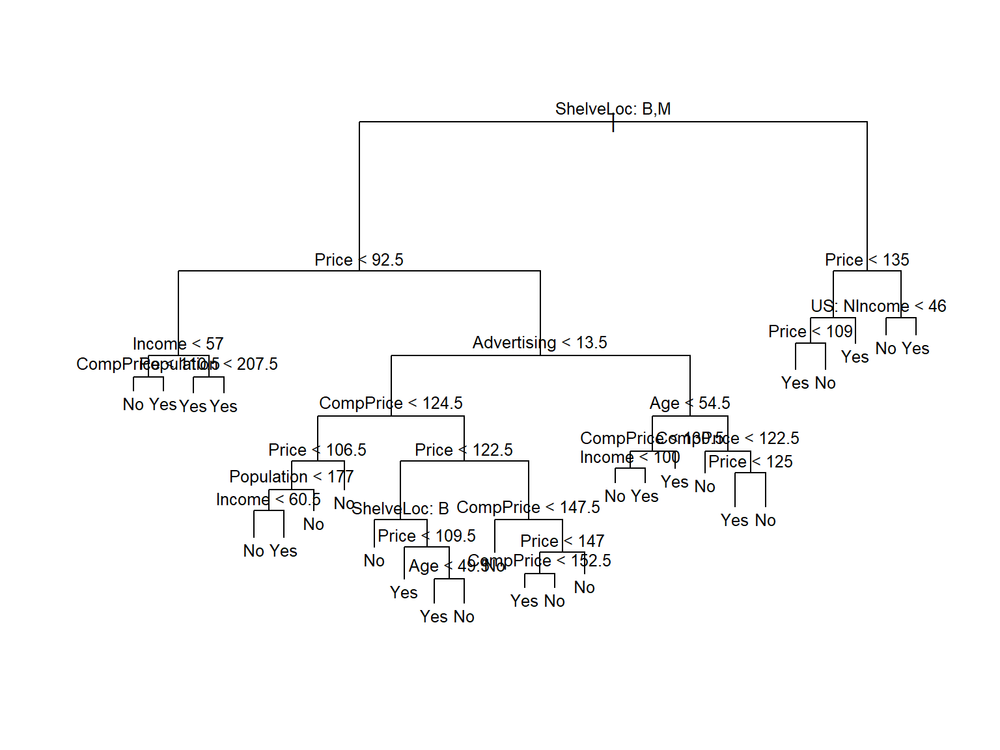
Alternatively we might have used rpart to build the tree and rpart.plot to depict it.
require(rpart)
tree.carseats2 <- rpart(
formula = High ~ . - Sales,
data = Carseats
# method = "anova"
)
require(rpart.plot)
rpart.plot(tree.carseats2)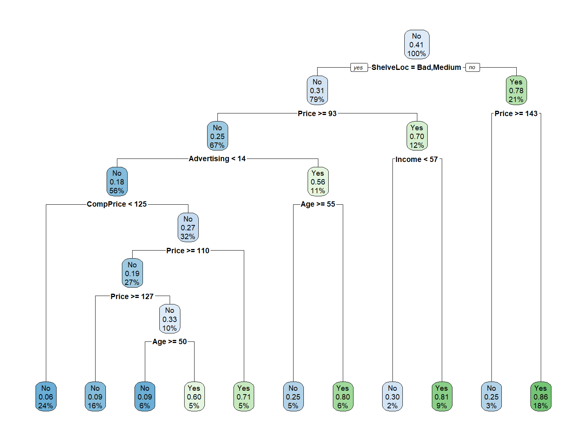
The most important indicator of Sales appears to be shelving location, since the first branch differentiates Good locations from Bad and Medium locations.
If we just type the name of the tree object, R prints output corresponding to each branch of the tree. R displays the split criterion (e.g. Price < 92.5), the number of observations in that branch, the deviance, the overall prediction for the branch (Yes or No), and the fraction of observations in that branch that take on values of Yes and No. Branches that lead to terminal nodes are indicated using asterisks.
tree.carseatsnode), split, n, deviance, yval, (yprob)
* denotes terminal node
1) root 400 541.500 No ( 0.59000 0.41000 )
2) ShelveLoc: Bad,Medium 315 390.600 No ( 0.68889 0.31111 )
4) Price < 92.5 46 56.530 Yes ( 0.30435 0.69565 )
8) Income < 57 10 12.220 No ( 0.70000 0.30000 )
16) CompPrice < 110.5 5 0.000 No ( 1.00000 0.00000 ) *
17) CompPrice > 110.5 5 6.730 Yes ( 0.40000 0.60000 ) *
9) Income > 57 36 35.470 Yes ( 0.19444 0.80556 )
18) Population < 207.5 16 21.170 Yes ( 0.37500 0.62500 ) *
19) Population > 207.5 20 7.941 Yes ( 0.05000 0.95000 ) *
5) Price > 92.5 269 299.800 No ( 0.75465 0.24535 )
10) Advertising < 13.5 224 213.200 No ( 0.81696 0.18304 )
20) CompPrice < 124.5 96 44.890 No ( 0.93750 0.06250 )
40) Price < 106.5 38 33.150 No ( 0.84211 0.15789 )
80) Population < 177 12 16.300 No ( 0.58333 0.41667 )
160) Income < 60.5 6 0.000 No ( 1.00000 0.00000 ) *
161) Income > 60.5 6 5.407 Yes ( 0.16667 0.83333 ) *
81) Population > 177 26 8.477 No ( 0.96154 0.03846 ) *
41) Price > 106.5 58 0.000 No ( 1.00000 0.00000 ) *
21) CompPrice > 124.5 128 150.200 No ( 0.72656 0.27344 )
42) Price < 122.5 51 70.680 Yes ( 0.49020 0.50980 )
84) ShelveLoc: Bad 11 6.702 No ( 0.90909 0.09091 ) *
85) ShelveLoc: Medium 40 52.930 Yes ( 0.37500 0.62500 )
170) Price < 109.5 16 7.481 Yes ( 0.06250 0.93750 ) *
171) Price > 109.5 24 32.600 No ( 0.58333 0.41667 )
342) Age < 49.5 13 16.050 Yes ( 0.30769 0.69231 ) *
343) Age > 49.5 11 6.702 No ( 0.90909 0.09091 ) *
43) Price > 122.5 77 55.540 No ( 0.88312 0.11688 )
86) CompPrice < 147.5 58 17.400 No ( 0.96552 0.03448 ) *
87) CompPrice > 147.5 19 25.010 No ( 0.63158 0.36842 )
174) Price < 147 12 16.300 Yes ( 0.41667 0.58333 )
348) CompPrice < 152.5 7 5.742 Yes ( 0.14286 0.85714 ) *
349) CompPrice > 152.5 5 5.004 No ( 0.80000 0.20000 ) *
175) Price > 147 7 0.000 No ( 1.00000 0.00000 ) *
11) Advertising > 13.5 45 61.830 Yes ( 0.44444 0.55556 )
22) Age < 54.5 25 25.020 Yes ( 0.20000 0.80000 )
44) CompPrice < 130.5 14 18.250 Yes ( 0.35714 0.64286 )
88) Income < 100 9 12.370 No ( 0.55556 0.44444 ) *
89) Income > 100 5 0.000 Yes ( 0.00000 1.00000 ) *
45) CompPrice > 130.5 11 0.000 Yes ( 0.00000 1.00000 ) *
23) Age > 54.5 20 22.490 No ( 0.75000 0.25000 )
46) CompPrice < 122.5 10 0.000 No ( 1.00000 0.00000 ) *
47) CompPrice > 122.5 10 13.860 No ( 0.50000 0.50000 )
94) Price < 125 5 0.000 Yes ( 0.00000 1.00000 ) *
95) Price > 125 5 0.000 No ( 1.00000 0.00000 ) *
3) ShelveLoc: Good 85 90.330 Yes ( 0.22353 0.77647 )
6) Price < 135 68 49.260 Yes ( 0.11765 0.88235 )
12) US: No 17 22.070 Yes ( 0.35294 0.64706 )
24) Price < 109 8 0.000 Yes ( 0.00000 1.00000 ) *
25) Price > 109 9 11.460 No ( 0.66667 0.33333 ) *
13) US: Yes 51 16.880 Yes ( 0.03922 0.96078 ) *
7) Price > 135 17 22.070 No ( 0.64706 0.35294 )
14) Income < 46 6 0.000 No ( 1.00000 0.00000 ) *
15) Income > 46 11 15.160 Yes ( 0.45455 0.54545 ) *tree.carseats2n= 400
node), split, n, loss, yval, (yprob)
* denotes terminal node
1) root 400 164 No (0.59000000 0.41000000)
2) ShelveLoc=Bad,Medium 315 98 No (0.68888889 0.31111111)
4) Price>=92.5 269 66 No (0.75464684 0.24535316)
8) Advertising< 13.5 224 41 No (0.81696429 0.18303571)
16) CompPrice< 124.5 96 6 No (0.93750000 0.06250000) *
17) CompPrice>=124.5 128 35 No (0.72656250 0.27343750)
34) Price>=109.5 107 20 No (0.81308411 0.18691589)
68) Price>=126.5 65 6 No (0.90769231 0.09230769) *
69) Price< 126.5 42 14 No (0.66666667 0.33333333)
138) Age>=49.5 22 2 No (0.90909091 0.09090909) *
139) Age< 49.5 20 8 Yes (0.40000000 0.60000000) *
35) Price< 109.5 21 6 Yes (0.28571429 0.71428571) *
9) Advertising>=13.5 45 20 Yes (0.44444444 0.55555556)
18) Age>=54.5 20 5 No (0.75000000 0.25000000) *
19) Age< 54.5 25 5 Yes (0.20000000 0.80000000) *
5) Price< 92.5 46 14 Yes (0.30434783 0.69565217)
10) Income< 57 10 3 No (0.70000000 0.30000000) *
11) Income>=57 36 7 Yes (0.19444444 0.80555556) *
3) ShelveLoc=Good 85 19 Yes (0.22352941 0.77647059)
6) Price>=142.5 12 3 No (0.75000000 0.25000000) *
7) Price< 142.5 73 10 Yes (0.13698630 0.86301370) *In order to properly evaluate the performance of a classification tree on these data, we must estimate the test error rather than simply computing the training error.
We split the observations into a training set and a test set, build the tree using the training set, and evaluate its performance on the test data.
The predict() function can be used for this purpose. In the case of a classification tree, the argument type = "class" instructs R to return the actual class prediction. This approach leads to correct predictions for around \(77 \%\) of the locations in the test data set.
set.seed(2)
train <- sample(1:nrow(Carseats), 200)
Carseats.test <- Carseats[-train, ]
High.test <- High[-train]
tree.carseats <- tree(High ~ . - Sales, Carseats,
subset = train)
tree.pred <- predict(tree.carseats, Carseats.test,
type = "class")
table(tree.pred, High.test) High.test
tree.pred No Yes
No 104 33
Yes 13 50(104 + 50) / 200[1] 0.77(If you re-run the predict() function then you might get slightly different results, due to “ties”: for instance, this can happen when the training observations corresponding to a terminal node are evenly split between Yes and No response values.)
Next, we consider whether pruning the tree might lead to improved results. The function cv.tree() performs cross-validation in order to determine the optimal level of tree complexity; cost complexity pruning is used in order to select a sequence of trees for consideration. We use the argument FUN = prune.misclass in order to indicate that we want the classification error rate to guide the cross-validation and pruning process, rather than the default for the cv.tree() function, which is deviance. The cv.tree() function reports the number of terminal nodes of each tree considered (size) as well as the corresponding error rate and the value of the cost-complexity parameter used (k, which corresponds to \(\alpha\) in (8.4)).
set.seed(7)
cv.carseats <- cv.tree(tree.carseats, FUN = prune.misclass)
names(cv.carseats)[1] "size" "dev" "k" "method"cv.carseats$size
[1] 21 19 14 9 8 5 3 2 1
$dev
[1] 75 75 75 74 82 83 83 85 82
$k
[1] -Inf 0.0 1.0 1.4 2.0 3.0 4.0 9.0 18.0
$method
[1] "misclass"
attr(,"class")
[1] "prune" "tree.sequence"Despite its name, dev corresponds to the number of cross-validation errors. The tree with 9 terminal nodes results in only 74 cross-validation errors. We plot the error rate as a function of both size and k.
opt<- par(mfrow = c(1, 2))
plot(cv.carseats$size, cv.carseats$dev, type = "b")
plot(cv.carseats$k, cv.carseats$dev, type = "b")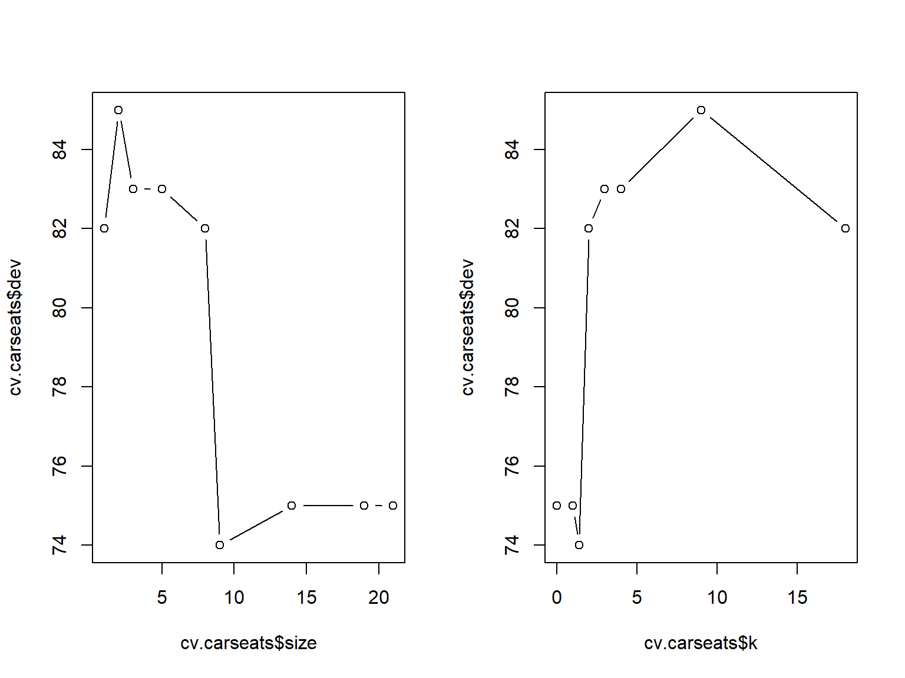
par(opt)We now apply the prune.misclass() function in order to prune the tree to obtain the nine-node tree.
prune.carseats <- prune.misclass(tree.carseats, best = 9)
plot(prune.carseats)
text(prune.carseats, pretty = 0)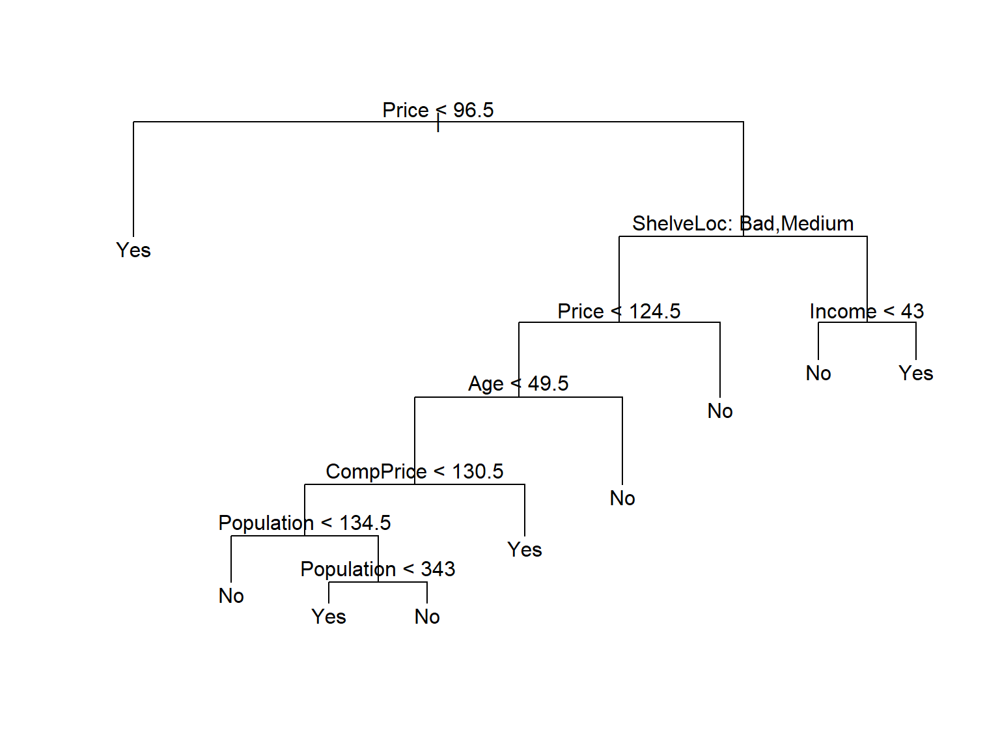
How well does this pruned tree perform on the test data set? Once again, we apply the predict() function.
tree.pred <- predict(prune.carseats, Carseats.test,
type = "class")
table(tree.pred, High.test) High.test
tree.pred No Yes
No 97 25
Yes 20 58(97 + 58) / 200[1] 0.775Now \(77.5 \%\) of the test observations are correctly classified, so not only has the pruning process produced a more interpretable tree, but it has also slightly improved the classification accuracy.
If we increase the value of best, we obtain a larger pruned tree with lower classification accuracy:
prune.carseats <- prune.misclass(tree.carseats, best = 14)
plot(prune.carseats)
text(prune.carseats, pretty = 0)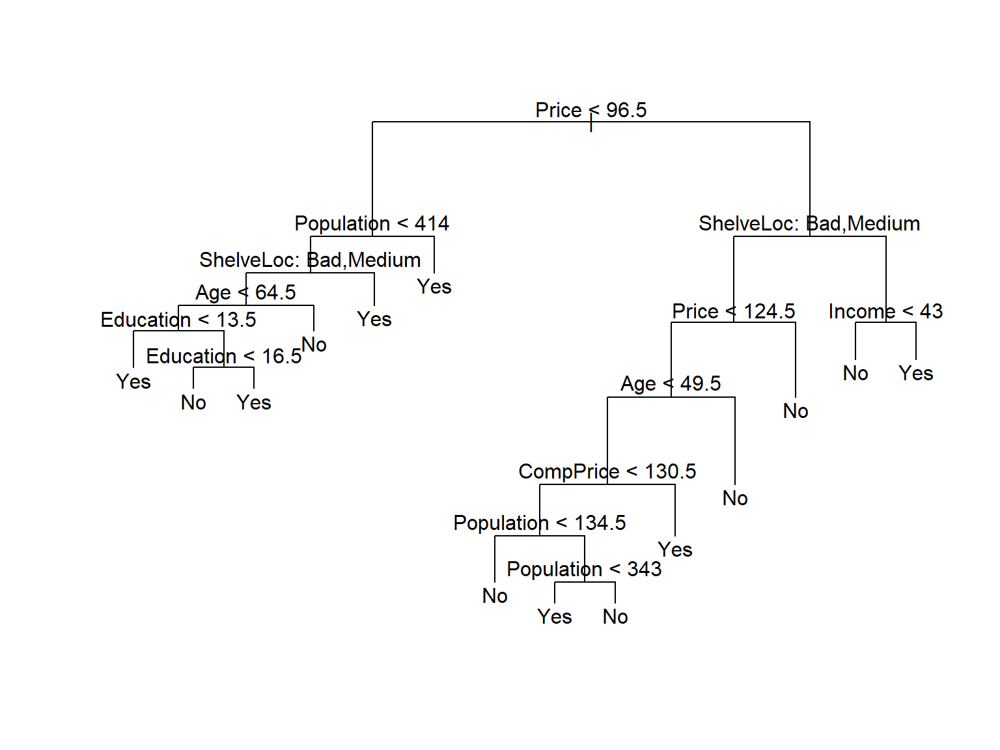
tree.pred <- predict(prune.carseats, Carseats.test,
type = "class")
table(tree.pred, High.test) High.test
tree.pred No Yes
No 102 31
Yes 15 52(102 + 52) / 200[1] 0.77Fitting Regression Trees
Here we fit a regression tree to the Boston data set. First, we create a training set, and fit the tree to the training data.
set.seed(1)
train <- sample(1:nrow(Boston), nrow(Boston) / 2)
tree.boston <- tree(medv ~ ., Boston, subset = train)
summary(tree.boston)
Regression tree:
tree(formula = medv ~ ., data = Boston, subset = train)
Variables actually used in tree construction:
[1] "rm" "lstat" "crim" "age"
Number of terminal nodes: 7
Residual mean deviance: 10.38 = 2555 / 246
Distribution of residuals:
Min. 1st Qu. Median Mean 3rd Qu. Max.
-10.1800 -1.7770 -0.1775 0.0000 1.9230 16.5800 Notice that the output of summary() indicates that only four of the variables have been used in constructing the tree. In the context of a regression tree, the deviance is simply the sum of squared errors for the tree. We now plot the tree.
par(mfrow=c(1,1))
plot(tree.boston)
text(tree.boston, pretty = 0, cex=0.7)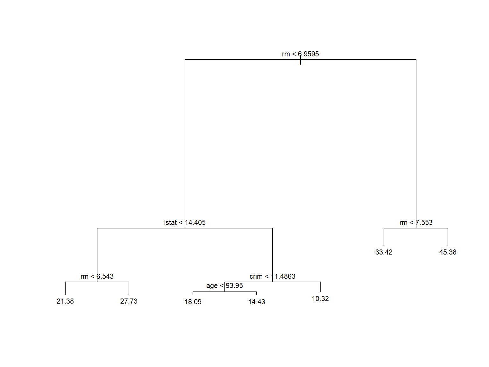
The variable lstat measures the percentage of individuals with {lower socioeconomic status}, while the variable rm corresponds to the average number of rooms.
The tree indicates that larger values of rm, or lower values of lstat, correspond to more expensive houses. For example, the tree predicts a median house price of $\(45{,}400\) for homes in census tracts in which rm >= 7.553.
It is worth noting that we could have fit a much bigger tree, by passing control = tree.control(nobs = length(train), mindev = 0) into the tree() function.
Now we use the cv.tree() function to see whether pruning the tree will improve performance.
cv.boston <- cv.tree(tree.boston)
plot(cv.boston$size, cv.boston$dev, type = "b")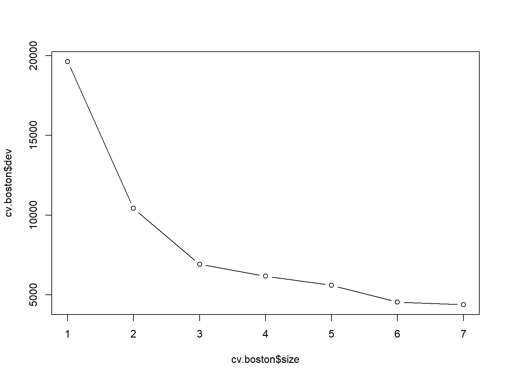
In this case, the most complex tree under consideration is selected by cross-validation. However, if we wish to prune the tree, we could do so as follows, using the prune.tree() function:
prune.boston <- prune.tree(tree.boston, best = 5)
plot(prune.boston)
text(prune.boston, pretty = 0)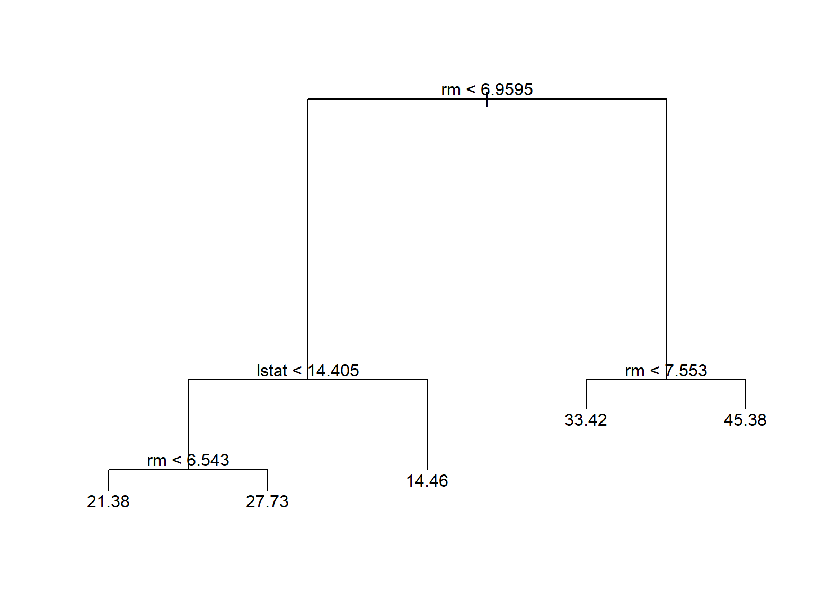
In keeping with the cross-validation results, we use the unpruned tree to make predictions on the test set.
yhat <- predict(tree.boston, newdata = Boston[-train, ])
boston.test <- Boston[-train, "medv"]
plot(yhat, boston.test)
abline(0, 1)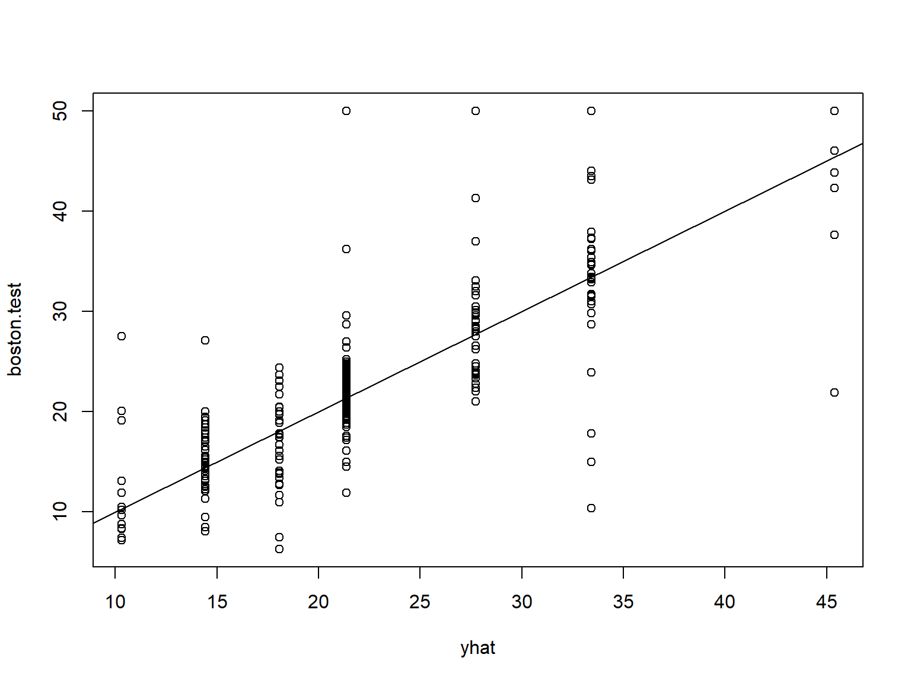
mean((yhat - boston.test)^2)[1] 35.28688In other words, the test set MSE associated with the regression tree is \(35.29\). The square root of the MSE is therefore around \(5.941\), indicating that this model leads to test predictions that are (on average) within approximately $\(5{,}941\) of the true median home value for the census tract.
Bagging and Random Forests
Here we apply bagging and random forests to the Boston data, using the randomForest package in R. The exact results obtained in this section may depend on the version of R and the version of the randomForest package installed on your computer.
Recall that bagging is simply a special case of a random forest with \(m=p\). Therefore, the randomForest() function can be used to perform both random forests and bagging.
We perform bagging as follows:
library(randomForest)
set.seed(1)
bag.boston <- randomForest(medv ~ ., data = Boston,
subset = train, mtry = 12, importance = TRUE)
bag.boston
Call:
randomForest(formula = medv ~ ., data = Boston, mtry = 12, importance = TRUE, subset = train)
Type of random forest: regression
Number of trees: 500
No. of variables tried at each split: 12
Mean of squared residuals: 11.40162
% Var explained: 85.17The argument mtry = 12 indicates that all \(12\) predictors should be considered for each split of the tree—in other words, that bagging should be done. How well does this bagged model perform on the test set?
yhat.bag <- predict(bag.boston, newdata = Boston[-train, ])
plot(yhat.bag, boston.test)
abline(0, 1)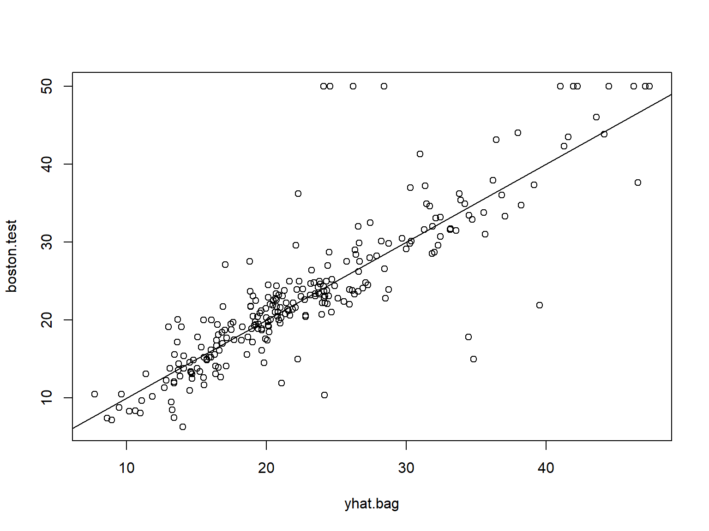
mean((yhat.bag - boston.test)^2)[1] 23.41916The test set MSE associated with the bagged regression tree is \(23.42\), about two-thirds of that obtained using an optimally-pruned single tree. We could change the number of trees grown by randomForest() using the ntree argument:
bag.boston <- randomForest(medv ~ ., data = Boston,
subset = train, mtry = 12, ntree = 25)
yhat.bag <- predict(bag.boston, newdata = Boston[-train, ])
mean((yhat.bag - boston.test)^2)[1] 25.75055Growing a random forest proceeds in exactly the same way, except that we use a smaller value of the mtry argument. By default, randomForest() uses \(p/3\) variables when building a random forest of regression trees, and \(\sqrt{p}\) variables when building a random forest of classification trees. Here we use mtry = 6.
set.seed(1)
rf.boston <- randomForest(medv ~ ., data = Boston,
subset = train, mtry = 6, importance = TRUE)
yhat.rf <- predict(rf.boston, newdata = Boston[-train, ])
mean((yhat.rf - boston.test)^2)[1] 20.06644The test set MSE is \(20.07\); this indicates that random forests yielded an improvement over bagging in this case.
Using the importance() function, we can view the importance of each variable.
importance(rf.boston) %IncMSE IncNodePurity
crim 19.435587 1070.42307
zn 3.091630 82.19257
indus 6.140529 590.09536
chas 1.370310 36.70356
nox 13.263466 859.97091
rm 35.094741 8270.33906
age 15.144821 634.31220
dis 9.163776 684.87953
rad 4.793720 83.18719
tax 4.410714 292.20949
ptratio 8.612780 902.20190
lstat 28.725343 5813.04833Two measures of variable importance are reported. The first is based upon the mean decrease of accuracy in predictions on the out of bag samples when a given variable is permuted. The second is a measure of the total decrease in node impurity that results from splits over that variable, averaged over all trees (this was plotted in Figure 8.9). In the case of regression trees, the node impurity is measured by the training RSS, and for classification trees by the deviance. Plots of these importance measures can be produced using the varImpPlot() function.
varImpPlot(rf.boston)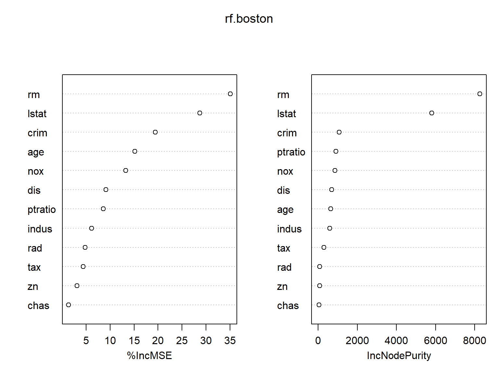
The results indicate that across all of the trees considered in the random forest, the wealth of the community (lstat) and the house size (rm) are by far the two most important variables.
Boosting
Here we use the gbm package, and within it the gbm() function, to fit boosted regression trees to the Boston data set. We run gbm() with the option distribution = "gaussian" since this is a regression problem; if it were a binary classification problem, we would use distribution = "bernoulli". The argument n.trees = 5000 indicates that we want \(5000\) trees, and the option interaction.depth = 4 limits the depth of each tree.
library(gbm)
set.seed(1)
boost.boston <- gbm(medv ~ ., data = Boston[train, ],
distribution = "gaussian", n.trees = 5000,
interaction.depth = 4)The summary() function produces a relative influence plot and also outputs the relative influence statistics.
summary(boost.boston)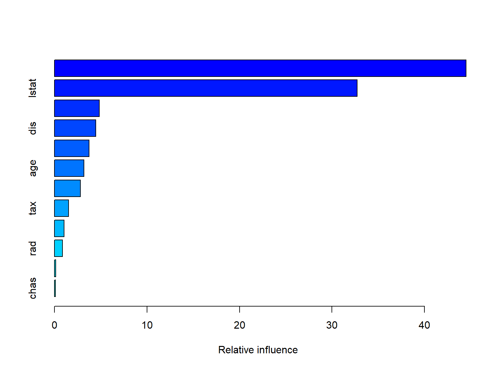
var rel.inf
rm rm 44.48249588
lstat lstat 32.70281223
crim crim 4.85109954
dis dis 4.48693083
nox nox 3.75222394
age age 3.19769210
ptratio ptratio 2.81354826
tax tax 1.54417603
indus indus 1.03384666
rad rad 0.87625748
zn zn 0.16220479
chas chas 0.09671228We see that lstat and rm are by far the most important variables. We can also produce partial dependence plots for these two variables. These plots illustrate the marginal effect of the selected variables on the response after integrating out the other variables. In this case, as we might expect, median house prices are increasing with rm and decreasing with lstat.
plot(boost.boston, i = "rm")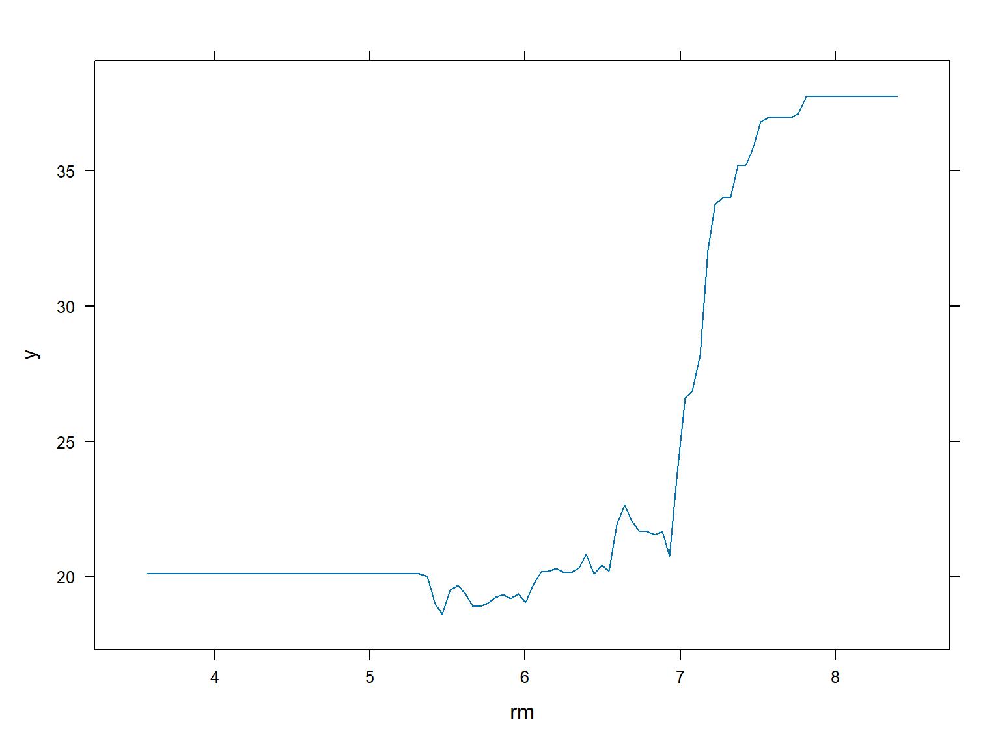
plot(boost.boston, i = "lstat")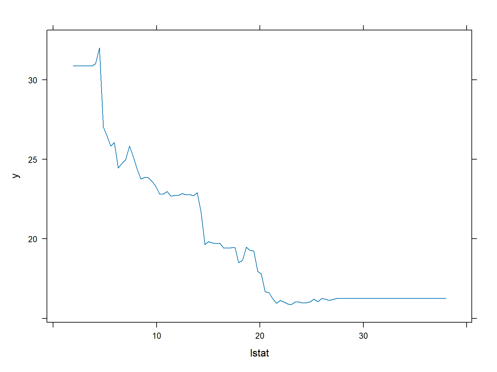
We now use the boosted model to predict medv on the test set:
yhat.boost <- predict(boost.boston,
newdata = Boston[-train, ], n.trees = 5000)
mean((yhat.boost - boston.test)^2)[1] 18.39057The test MSE obtained is \(18.39\): this is superior to the test MSE of random forests and bagging. If we want to, we can perform boosting with a different value of the shrinkage parameter \(\lambda\) in (8.10). The default value is \(0.001\), but this is easily modified. Here we take \(\lambda=0.2\).
boost.boston <- gbm(medv ~ ., data = Boston[train, ],
distribution = "gaussian", n.trees = 5000,
interaction.depth = 4, shrinkage = 0.2, verbose = F)
yhat.boost <- predict(boost.boston,
newdata = Boston[-train, ], n.trees = 5000)
mean((yhat.boost - boston.test)^2)[1] 16.54778In this case, using \(\lambda=0.2\) leads to a lower test MSE than \(\lambda=0.001\).
Bayesian Additive Regression Trees
In this section we use the BART package, and within it the gbart() function, to fit a Bayesian additive regression tree model to the Boston housing data set. The gbart() function is designed for quantitative outcome variables. For binary outcomes, lbart() and pbart() are available.
To run the gbart() function, we must first create matrices of predictors for the training and test data. We run BART with default settings.
library(BART)
x <- Boston[, 1:12]
y <- Boston[, "medv"]
xtrain <- x[train, ]
ytrain <- y[train]
xtest <- x[-train, ]
ytest <- y[-train]
set.seed(1)
bartfit <- gbart(xtrain, ytrain, x.test = xtest)*****Calling gbart: type=1
*****Data:
data:n,p,np: 253, 12, 253
y1,yn: 0.213439, -5.486561
x1,x[n*p]: 0.109590, 20.080000
xp1,xp[np*p]: 0.027310, 7.880000
*****Number of Trees: 200
*****Number of Cut Points: 100 ... 100
*****burn,nd,thin: 100,1000,1
*****Prior:beta,alpha,tau,nu,lambda,offset: 2,0.95,0.795495,3,3.71636,21.7866
*****sigma: 4.367914
*****w (weights): 1.000000 ... 1.000000
*****Dirichlet:sparse,theta,omega,a,b,rho,augment: 0,0,1,0.5,1,12,0
*****printevery: 100
MCMC
done 0 (out of 1100)
done 100 (out of 1100)
done 200 (out of 1100)
done 300 (out of 1100)
done 400 (out of 1100)
done 500 (out of 1100)
done 600 (out of 1100)
done 700 (out of 1100)
done 800 (out of 1100)
done 900 (out of 1100)
done 1000 (out of 1100)
time: 3s
trcnt,tecnt: 1000,1000Next we compute the test error.
yhat.bart <- bartfit$yhat.test.mean
mean((ytest - yhat.bart)^2)[1] 15.94718On this data set, the test error of BART is lower than the test error of random forests and boosting.
Now we can check how many times each variable appeared in the collection of trees.
ord <- order(bartfit$varcount.mean, decreasing = T)
bartfit$varcount.mean[ord] nox lstat tax rad rm indus chas ptratio age zn
22.952 21.329 21.250 20.781 19.890 19.825 19.051 18.976 18.274 15.952
dis crim
14.457 11.007